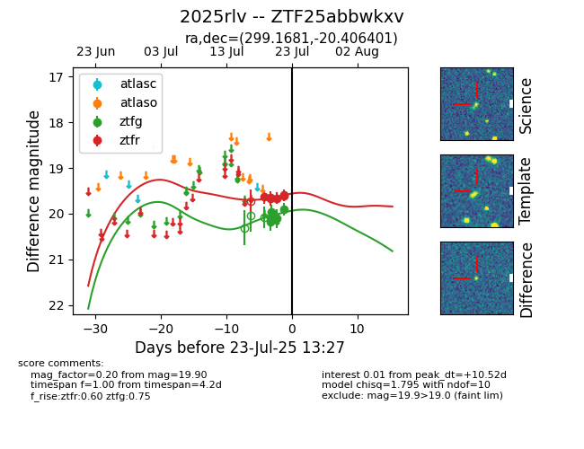

Target ZTF25abbwkxv at 2025-07-23 13:27, see:
FINK: fink-portal.org/ZTF25abbwkxv
Lasair: lasair-ztf.lsst.ac.uk/objects/ZTF25abbwkxv
ALeRCE: alerce.online/object/ZTF25abbwkxv
TNS: wis-tns.org/object/2025rlv
YSE: ziggy.ucolick.org/yse/transient_detail/2025rlv
alt names
ZTF25abbwkxv (ztf,fink)
2025rlv (tns,yse)
coordinates:
equatorial (ra, dec) = (299.1681,-20.40640)
galactic (l, b) = (20.9863,-23.15530)
photometry
last ztfg=19.90, ztfr=19.58
5 ztfg, 6 ztfr detections
